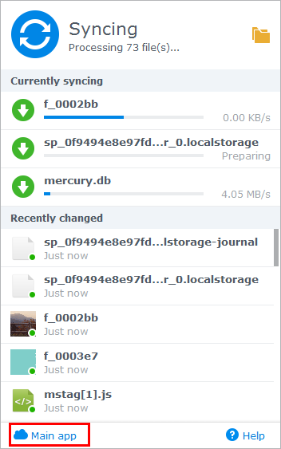

Áttekintés
A Synology NAS számára készült Cloud Station egy fájlszinkronizáló alkalmazás, amely megkönnyíti a Synology NAS eszközén található fájlok szinkronizálását más eszközökkel, például számítógépekkel vagy mobileszközökkel (a DS cloud használatával). A Cloud Station számítógépére és Synology NAS kiszolgálóra való együttes telepítését követően automatikusan szinkronizálásra kerülnek a számítógépe meghatározott mappájában található fájlok a Synology NAS kiszolgálóra.
1. A Cloud Station telepítése
- Nyissa meg a Csomagkezelési központot, keresse meg a Cloud Station alkalmazást, majd kattintson a Telepítés parancsra.

2. A Cloud Station engedélyezése
- Indítsa el a Cloud Station alkalmazást.
- Ha nem engedélyezte a felhasználói kezdőlap funkciót, felszólítják ennek megtételére. Kattintson az OK gombra.
- Átirányításra kerül a felhasználói beállítások oldalra. Engedélyezze a felhasználói homes mappákat, és kattintson az Alkalmaz gombra.
- Most nyissa meg ismét a Cloud Station oldalt, a rendszer pedig felszólítja annak engedélyezésére. Kattintson az Igen lehetőségre.
- Lépjen a Jogosultságok menüpontra, és határozza meg, mely felhasználók vehetik igénybe a Cloud Station alkalmazást. Kattintson a Mentés gombra.


3. Kliens telepítése és engedélyezése
- Lépjen a Cloud Station > Áttekintés menüpontra, majd kattintson a Számítógépek gombra.
- Kattintson az operációs rendszerének megfelelő gombra a Cloud Station letöltéséhez. (A Cloud Station a Synology Letöltőközpontjából is letölthető.)
- Indítsa el a telepítőt a számítógépén, és kövesse a képernyőn megjelenő utasításokat.
- Telepítés után futtassa a Cloud Station alkalmazást a számítógépén. Kattintson az Indítás most gombra.
- Adja meg a Cloud Station alkalmazást futtató Synology NAS címét (vagy QuickConnect ID azonosítóját), felhasználónevét, és jelszavát. A helyi hálózaton található IP-címekre kereshet a jobb oldalon található keresés ikonra kattintással. Kattintson a Tovább gombra.
- Válassza ki feladatának beállításait (ebben az esetben a választás a Gyorsbeállítás opcióra esett), majd kattintson a Tovább gombra.
- A Cloud Station mappa beállításainak a véglegesítéséhez kattintson a Befejezés gombra.
- A Cloud Station mappa megnyitásához kattintson a Megnyitás most lehetőségre.
- A Cloud Station ikon megtalálható a rendszertálcán.
- A tálcamenü megnyitásához kattintson duplán a Cloud Station ikonra. Ezen a képernyőn megtekintheti fájljainak az állapotát, illetve folyamatra vonatkozó adatokat láthat. A Cloud Station indításához kattintson a Főalkalmazás parancsra. 
- Indításkor megjelenik néhány tipp a Cloud Station használatával kapcsolatban. További tippek megjelenítéséhez kattintson a jobb nyílra, további tájékoztatás ügyében pedig kattintson az Ugrás online segédanyagokhoz parancsra. Amennyiben nincs szüksége tippekre, kattintson a Ne mutassa ezt többször lehetőségre.
- Mostantól kezelheti szinkronizálási feladatait a Cloud Station alkalmazásban.


4. Adatok szinkronizálása mobileszközökre
A DS cloud ingyenesen elérhető az Apple App Store és Google Play Store áruházakban. Beolvashatja a lenti QR-kódot a közvetlen letöltéshez.